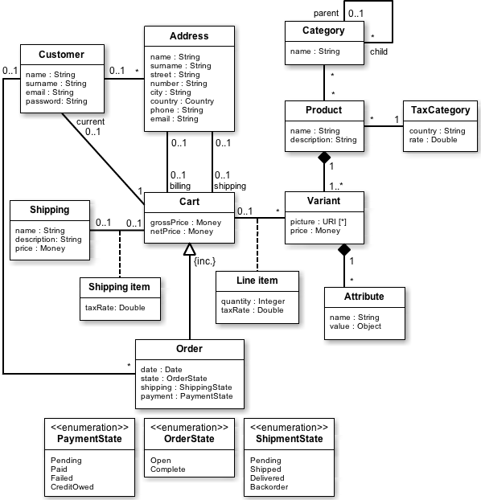
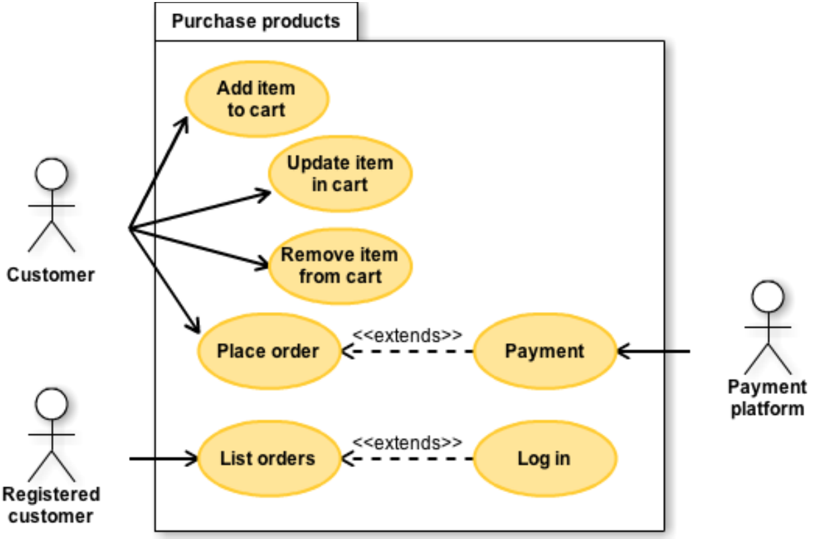

<!DOCTYPE HTML>
<html>
    <meta name="viewport" content="width=device-width, initial-scale=1">
    <link rel="stylesheet" href="https://www.w3schools.com/w3css/4/w3.css">
    <!-- <link rel="stylesheet" href="ClusteringGraphStyle.css"> -->
    <link rel="stylesheet" href="explanationPageStyle.css">
    <link rel="stylesheet" href="static/joint.css">
    <link rel="stylesheet" href="interactiveGraph.css">
</html>
<head>
    <script src="https://d3js.org/d3.v5.min.js"></script>
    <script src="https://dagrejs.github.io/project/dagre-d3/latest/dagre-d3.js"></script>
    <script src="https://unpkg.com/tippy.js@2.5.0/dist/tippy.all.min.js"></script>
    <script src="static/explanationData.js"></script>
    <script type='text/javascript' src='static/tinycolor.js'></script>
    <script type='text/javascript' src='static/jquery.js'></script>
    <script type='text/javascript' src='static/lodash.js'></script>
    <script type='text/javascript' src='static/backbone.js'></script>
    <script type='text/javascript' src='static/joint.js'></script>
    <script type='text/javascript' src='static/graphlib.js'></script>
    <script type='text/javascript' src='static/dagre.js'></script>
    <script type='text/javascript' src='static/joint.layout.DirectedGraph.js'></script>
    <script type='text/javascript' src='static/svg-pan-zoom.js'></script>
    <script type='text/javascript' src='explanationPageLogic.js'></script>
    <script type='text/javascript' src='ontologyRelations.js'></script>
</head>

<body> 
    <div>
        <div id='explanationSidebar'class="w3-sidebar w3-bar-block" style="background-color:#d6d6d6;width:37%;right:0;"> 
            <div class='w3-light-blue w3-border-left w3-border-indigo' style='position:absolute;height:100%;width:5px;float:left;'>
                <div style='position:absolute;height:50%;width:10px;top:0;bottom:0;margin:auto;'>
                    <button onclick="sidebarToggle('explanationSidebar')" class="w3-large button1"/>
                </div>
            </div>
            <div style='height:1px;width:1%;float:left'></div>
            <div class='' style="height:100%;width:98%;margin-right:0px;padding-right:0px;float:left;overflow-y:scroll;overflow-x:hidden;display:flex;flex-wrap:wrap">
                <button class='roundedTopCorners' style='height:50px;border:none;background:none;margin:0px;padding-left:10px;padding-right:10px'>Functional View</button>
                <button class='w3-light-gray roundedTopCorners' style='height:50px;border:none;background:none;margin:0px;padding-left:10px;padding-right:10px'>Logical View</button>
                <button class='roundedTopCorners' style='height:50px;border:none;background:none;margin:0px;padding-left:10px;padding-right:10px'>UI View</button>
                <button class='roundedTopCorners' style='height:50px;border:none;background:none;margin:0px;padding-left:10px;padding-right:10px'>Development View</button>
                <div class='w3-light-gray' style='min-height:100%;width:inherit;padding-left:16px;padding-right:16px;padding-top:16px;margin:0px'>
                    <h2><b>Question:</b> How is the feature Purchase Products mapped to its implementation?</h2>
                    <hr class='thick'> 
                    <h3 class="summary title w3-bar-item" onclick='toggleVisiblityOfDescription2("summary")' style='padding-left:0px;'>Summary&emsp;-</h3>
                    <div class='summary' style='max-height:10000px;'>
                        <p>
                            The feature Purchase Products comprises of 7 functional requirements which are satisfied by 2 logical classes in the logical view of the architecture. These classes are in turn designed by classes and class packages in the development view of the architecture. The development classes are finally implemented in the source code.  
                        </p>
     
                        <p>
                            The left-side panel demonstrates how the feature Purchase products maps to the implementation classes via the Logical view. 
                            Clicking on any entity will highlight the paths to its other related entities. To see all available actions, click the round
                            "i" button at the top left of the panel.
                        </p>

                        <p>
                            The subsequent sections contain descriptions of the most significant entities found in this explanation, 
                            namely the logical classes, the requirements and the feature Purchase products.
                        </p>
                    </div>
                    <hr class='thick'> 
                    <h3 id='conceptual_model_title' class='w3-bar-item title' onclick='toggleVisiblityOfDescription("conceptual_model_description")' style='padding-left:0'>Logical classes&emsp;+</h3>
                    <div id='conceptual_model_description' style='max-height:0px;display:none;opacity:0'>
                        <p> Once the checkout is finished a cart becomes an order, with 
                            information about the current payment, shipping and order status.
                            If the customer
                            was not anonymous, this order will be associated with that customer, along with any 
                            of his previous orders.
                            While the current cart may optionally have associated information, this information is mandatory in an
                            order instance.

                        </p>
                        <hr>
                        <h4 id='conceptual_model_overview_title' class='w3-bar-item title' onclick='toggleVisiblityOfDescription("conceptual_model_overview_description")' style='padding-left:0'>Overview of the Logical view&emsp;+</h4>
                        <div id='conceptual_model_overview_description' style='max-height:0px;display:none;opacity:0'>
                                <p>
                                        The conceptual model of this project revolves around the cart concept, while all other system elements 
                                        are there to provide the required information to the cart, as seen in the class diagram below  
                                        (Figure  3.10).  Products  are  related  to  carts  as  a  list  of  product  variants,  forming  line
                                         items.  Variant  is  a  concept  to  define  the  part  of  the  product  that  contains  the  
                                         particular characteristics of it, such as color or size, even having sometimes a different price. 
                                         Therefore every product has at least one variant, each one with different price or attributes. Similarly, 
                                         a cart can be associated with one of the shipping methods available in the system, resulting in a shipping 
                                         item, necessary to manage taxes. 
                                        
                                        Both products and shipping methods have  a  particular  tax  category,  that  can  be  variable  
                                        for  products  and  fixed  in  the  case  of shipping. When one of these elements are added to the cart, 
                                        a tax rate is assigned to the item according to this tax category and the shipping address of the cart.
                                         As mentioned above carts can have a shipping address, but can have as well a billing address. 
                                        
                                        A cart can belong to a registered customer, otherwise it is considered to have an 
                                        anonymous customer. <font color="red">Once the checkout is finished a cart becomes an order, with 
                                        information about the current payment, shipping and order status.</font> <font color="red">If the customer
                                         was not anonymous, this order will be associated with that customer, along with any 
                                         of his previous orders.</font> Every customer can also have a list of addresses comprising 
                                         the address book.
                                        
                                        <font color="red">Products, addresses and shipping methods can change or disappear over time, but the orders 
                                        associated with them must stay in the system for an indefinite period of time, having exactly 
                                        44 the original information.</font> To solve this issue, cart is not related to the original instances, 
                                        but to instances that were created exclusively for this particular cart as a snapshot of those original 
                                        instances.
                                        
                                        <font color="red">While the current cart may optionally have associated information, this information is mandatory in an
                                         order instance.</font> For simplicity, the conceptual model only accepts product and shipping prices that do not 
                                         include taxes. Allowing taxes in prices can be achieved by simply adding a boolean attribute indicating whether 
                                         the price in question has taxes included or not. So assuming that taxes are not included, the net total price in 
                                         the cart must be the sum of all the line item prices (i.e. the quantity in each line item multiplied by the corresponding 
                                         variant price) associated with it, plus the price of the shipping method selected. <font color="red">In order to calculate the gross total 
                                         price, taxes must be added up to this resulting net price.</font> Taxes are calculated multiplying the price of each shipping or l
                                         ine item by its corresponding tax rate. 
                                        
                                        Lastly when the shipping address is set in the cart, all tax rates from shipping and line items are calculated. 
                                        Only those products that include a tax category corresponding to the zone (e.g. state, country) of the shipping address 
                                        can be part of the cart. Missing the tax category means that the price cannot be calculated, thus the product is not 
                                        available in that zone.
                                </p>
                                                                                                                         
                        </div>
                        <hr>
                        
                        <h4 id='conceptual_model_figures_title' class='w3-bar-item title' onclick='toggleVisiblityOfDescription("conceptual_model_figures_description")' style='padding-left:0'>Figures&emsp;+</h4>
                        <div id='conceptual_model_figures_description' style='max-height:0px;display:none;opacity:0'>
                            <p>This section shows all the figures related to the logical classes</p>
                            <div class='w3-border w3-padding w3-white' style='text-align:center'>
                                
                                <p>Figure 3.10: Class diagram of the system.</p>
                            </div>
                        </div>
                        <hr>
                        <h4 class='w3-bar-item' style='padding-left:0'>Cart </h4>
                        <hr>
                        <h4 class='w3-bar-item' style='padding-left:0'>Order</h4>
                    </div>
                    
                    <hr class='thick'> 

                    <h3 class='title w3-bar-item' onclick='toggleVisiblityOfDescription("requirements")'style='padding-left:0'>Functional Requirements&emsp;+</h3> 
                    <div id='requirements' style='max-height:0px;display:none;opacity:0'>
                        <p>This section shows short descriptions of the functional requirements mentioned in this explanation.</p>
                        <hr>
                        <h4 id='add_item_to_cart_title' class='w3-bar-item title' onclick='toggleVisiblityOfDescription("add_item_to_cart_description")' style='padding-left:0'>Add item to cart&emsp;+</h4>
                        <div id='add_item_to_cart_description' style='max-height:0px;display:none;opacity:0'>
                            <p>This is the description of the functional requirement Add item to cart. </p>
                                <p>
                                    <h5>Value statement:</h5>
                                    As a customer, I want to add a particular product to the shopping cart, so that I can buy it with the next order.
                                </p>
                                <p>
                                    <h5>Acceptance criteria:</h5>
                                    When the product is already in the cart, the quantity will be updated with the addition.<br/>
                                    When the selected product does not exist, show a bad request error message.<br/>
                                    When a product is requested to be added to the shopping cart, add the selected variant in the cart and display the updated cart content.
                                </p>
                                <p>
                                    <h5>Priority: 1</h5>
                                    
                                </p>
                            
                        </div>
                        <hr>
                        <h4 class='w3-bar-item' style='padding-left:0'>MiniCart</h4>
                        <hr>
                        <h4 class='w3-bar-item' style='padding-left:0'>Payment</h4>
                        <hr>
                        <h4 class='w3-bar-item' style='padding-left:0'>Update item in cart</h4>
                        <hr>
                        <h4 class='w3-bar-item' style='padding-left:0'>Place order</h4>
                        <hr>
                        <h4 class='w3-bar-item' style='padding-left:0'>List orders</h4>
                        <hr>
                        <h4 class='w3-bar-item' style='padding-left:0'>Remove item from cart</h4>
                    </div>
                    <hr class='thick'> 
                    
                    <h3 id='feature_title' class='w3-bar-item title' onclick='toggleVisiblityOfDescription("feature_description")' style='padding-left:0'>Feature: Purchase products&emsp;+</h3>
                    <div id='feature_description' style='width:inherit;max-height:0px;display:none;opacity:0'>
                        <p>This section describes the feature Purchase products.</p>
                        
                        <hr>
                        
                        <h4 id='feature_desc_title' class='w3-bar-item title' onclick='toggleVisiblityOfDescription("feature_desc_description")' style='padding-left:0'>Description&emsp;+</h4>
                        <div id='feature_desc_description' style='max-height:0px;display:none;opacity:0'>
                            <p>Figure 3.4 shows the use cases related to purchasing products. They can be clearly divided into two different topics: on the one hand all those use cases for managing the shopping cart (i.e. adding, updating and removing items), on the other hand those related to placing and listing orders. When placing an order the customer may be requested to pay online, in which case the payment platform will provide the necessary means. Anonymous as much as registered customers can place orders, but only customers that have been identified are able to list their own orders, otherwise they are requested to identify themselves.</p>
                        </div>
                        
                        <hr>
                        <h4 id='feature_diagram_title' class='w3-bar-item title' onclick='toggleVisiblityOfDescription("feature_diagram_description")' style='padding-left:0'>Figure&emsp;+</h4>
                        <div id='feature_diagram_description' style='max-height:0px;display:none;opacity:0'>
                            <p>This section shows all the figures related to purchase product.</p>
                            <div class='w3-border w3-white w3-padding' style='text-align: center;'>
                                
                                <p>Figure 3.4: Use case diagram showing the use cases of the purchase products package.</p>
                            </div>
                        </div>
                        <hr>
                    </div>

                    <hr class='thick'> 
                </div>
 

            </div>
        </div>
        
        <div style='overflow:hidden;height:100%;position:absolute;width:100%;'>
            <div class='w3-light-blue' style='width:99.5%;height:7%;float:left;'></div>
            <div class='w3-border info' style='margin-left:20%'><b>i</b>
                <script src='static/info.js'></script>
            </div>
            <div id='interactive_diagram' class='w3-white w3-border' style='height:93%;width:99.5%;float:left'>
                <!-- <svg id='interactive_diagram_svg' style='height:100%;width:100%'></svg> -->
                <div id='myholder' style='width:80%;height:100%;float:right;'></div>
                <div id='minimap' style='width:200px;height:200px;float:right;background-color:green;position:absolute;left:21%;bottom:20px'></div>
                <script src="metaModelOriginal.js"></script>  

                <div id='UI' style='background-color:lightblue;width:20%;height:100%;float:right;'>
                    <div class='w3-margin w3-bar-item'>
                        <p>Selection: </p>
                        <div class='w3-border w3-border-black w3-white'>
                            <p id='entity_selection'>&emsp;</p>
                        </div>
                    </div>
                    <hr class='thick'>
                    <div class='w3-margin'>
                        <p>Relations:</p>
                        <select id='relations_select'>
                        </select>
                    </div>
                    <button id='find_relations_button' class='w3-margin w3-button w3-green' onclick='drawRelations()'>Find relations</button>
                    <hr class='thick'>
                    <div class='w3-margin'>
                        <p>Find path to:</p>
                        <select id='path_select'>
                            <option value="p1">ImplementationClass</option>
                            <option value="p2">Feature</option>
                            <option value="p3">ArchitecturalPattern</option>
                            <option value="p4">Rationale</option>
                        </select>
                    </div>
                    <div class='w3-bar-item'>
                        <button id='find_path_button' class='w3-button w3-green w3-margin' onclick='drawPathTo()'>Find path</button>
                    </div>
                    <div class='w3-bar-item'>
                        <button id='save_button' class='w3-button w3-green w3-margin' onclick='saveGraph()'>Save graph</button>
                    </div>
                    <div class='w3-bar-item'>
                        <button id='load_button' class='w3-button w3-green w3-margin' onclick='loadGraph()'>Load graph</button>
                    </div>
                </div>
            </div>
        </div>

    </div>

</body>
